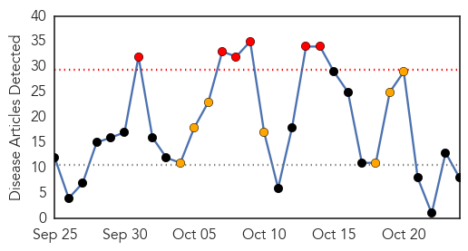
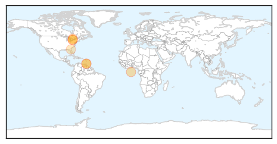

30 Day Trends
Web: 6 alerts, 7 warnings
Twitter: 0 alerts, 0 warnings
Top Articles:
- 0.998
- Trinidad and Tobago's Newsday
- 0.990
- Thinking of a flu shot? Don’t put it off
- 0.885
- Today's stories from newspapers in North Bay Nipissing
- 0.868
- Ministry warns: Be on your guard against flu*
- 0.806
- Today's stories from newspapers in Caledon
- 0.800
- Today's stories from newspapers in Ottawa
- 0.751
- October 23, 2015 Archives
- 0.751
- October 23, 2015 Archives
Top Tweets:
-
No tweets found for Oct 24, 2015
Web/News Articles
Tweets

Article Locations
Article Confidences